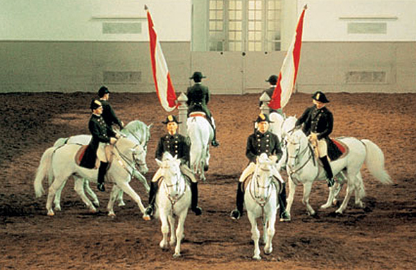

|
Istorie Politică Comunități autonome Mediul înconjurător Economie Demografie Bucătăria spaniolă Seat |
Istoria SpanieiÎncepând cu secol IX î.Hr., celții, fenicienii, grecii și cartaginezii au intrat în Peninsula Iberică, urmați de Republica Romană, care a ajuns în secolul II î.Hr.. Limba de acum a Spaniei, religia și sistemul juridic dăinuie din perioada romană. Cucerită de vizigoți în secolul V d. Hr. și atacată de mai multe ori în 711 de maurii nord-africani islamici, Spania modernă a început să se formeze după Reconquista, eforturile de a-i elimina pe mauri, care au rămas aici până în 1492. În 1478 Regina Elisabeta I a Castiliei a întărit inchiziția spaniolă, instituție interzisă abia în 1834, în timpul domniei Elisabetei a II-a. În 1492 a fost finanțată prima călătorie pe Atlantic a lui Cristofor Columb, spre "Lumea Nouă". Până în 1512, unificarea Spaniei din zilele noastre a fost completă. Totuși, proiectul monarhilor castiliani a fost de a unifica întreaga Iberie, iar acest vis a părut aproape îndeplinit, când Filip al II-lea a devenit rege al Portugaliei în 1580, și al celorlaltor regate iberice (colectiv cunoscute ca și "Spania" care nu era pe atunci un stat unificat). În 1640, poliția centralistă a Contelui de Olivares a provocat războaie în Portugalia și Catalonia: Portugalia a devenit un regat independent din nou, iar Catalonia s-a bucurat de o independență asistată de Franța, dar pentru scurt timp. În secolul XVI, Spania a devenit cea mai puternică națiune din Europa, datorită bunăstării derivate din colonizarea spaniolă a Americilor. Dar o serie de războaie lungi și costisitoare și revolte a început declinul puterii Spaniei în Europa. Controversa asupra succesiunii la tron a consumat țara în secolul XVIII (vezi Războiul Spaniol de Succesiune - important, un stat spaniol centralizat a fost stabilit doar după acest război), prin ocupația din partea Franței în timpul erei napoleonice la începutul anilor 1800, și a condus la o serie de conflicte armate și revolte între liberali și suporterii Vechiului Regim în mare parte a secolului XIX; un secol care a reprezentat și pierderea a mare parte din coloniile spaniole din Americi, culminate în Războiul Spano-American din 1898. Secolul XX inițial a adus puțină pace; colonizarea Saharei de Vest, Marocului Spaniol și a Guineei Ecuatoriale a fost probată ca și un substitut al pierderilor din Americi. O perioadă de dictatură (1923-1931) s-a încheiat prin stabilirea celei de A Doua Republică Spaniolă.Creșterea polarizării politice, combinata cu cresterea violenței neverificate, a dus la izbucnirea Războiului Civil Spaniol în iulie 1936. Urmând victoria forțelor sale naționaliste în 1939, generalul Francisco Franco a condus o națiune epuizată politic și economic. Totuși, în anii 1960 și anii 1970, Spania a fost transformată gradual într-o economie industrială modernă cu un sector de turism în creștere. După moartea dictatorului Generalul Franco în noiembrie 1975, succesorul său desemnat personal, Prințul Juan Carlos și-a asumat titlurile de rege și de conducător al statului. El a jucat un rol important în ghidarea Spaniei spre un stat democratic modern, mai ales în opoziția unei încercări de coup d'etat în 1981. Spania a aderat la OTAN în 1982 și a devenit membră a Uniunii Europene în 1986. După moartea lui Franco, vechilor naționalități istorice - Țara Bascilor, Catalonia și Galicia - li s-a dat o autonomie mare, care, s-a extins spre toate regiunile spaniole. |